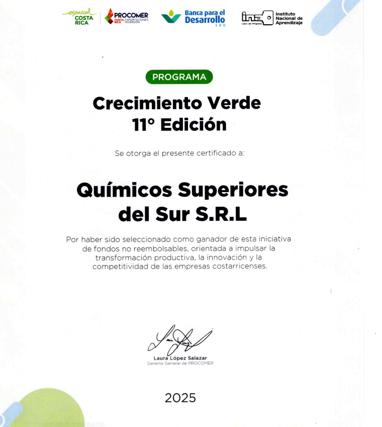
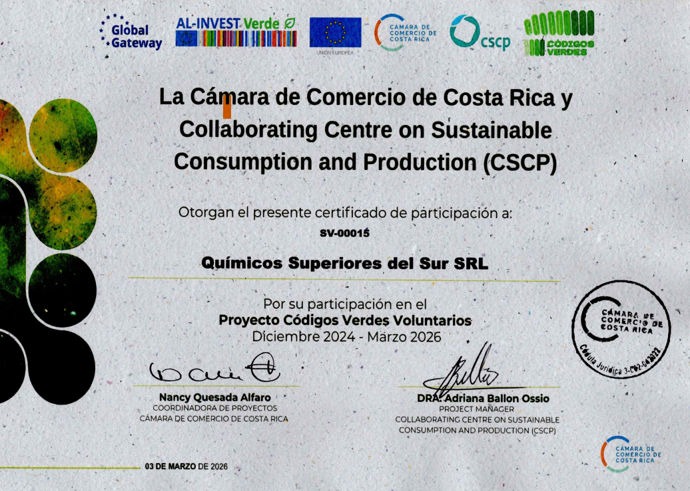

Crecimiento Verde 11° Edición
Reconocimiento orientado a la innovación, competitividad y transformación empresarial sostenible, alineado con nuestro compromiso de mejora continua.
Ver publicaciónDocumentación y respaldo
Una selección editorial de certificaciones, reconocimientos y documentos que reflejan nuestro compromiso con procesos responsables, mejora continua y soluciones confiables.
Respaldo documental para clientes, aliados y procesos corporativos.
Consulta nuestros respaldos en un formato claro, visual e informativo.

Reconocimiento orientado a la innovación, competitividad y transformación empresarial sostenible, alineado con nuestro compromiso de mejora continua.
Ver publicación
Participación en iniciativas que promueven prácticas responsables y fortalecen nuestra visión de producción consciente y confiable.
Ver publicaciónDocumento de consulta para conocer nuestras líneas de limpieza, higiene y desinfección disponibles para hogares, comercios e industria.
Ver publicación